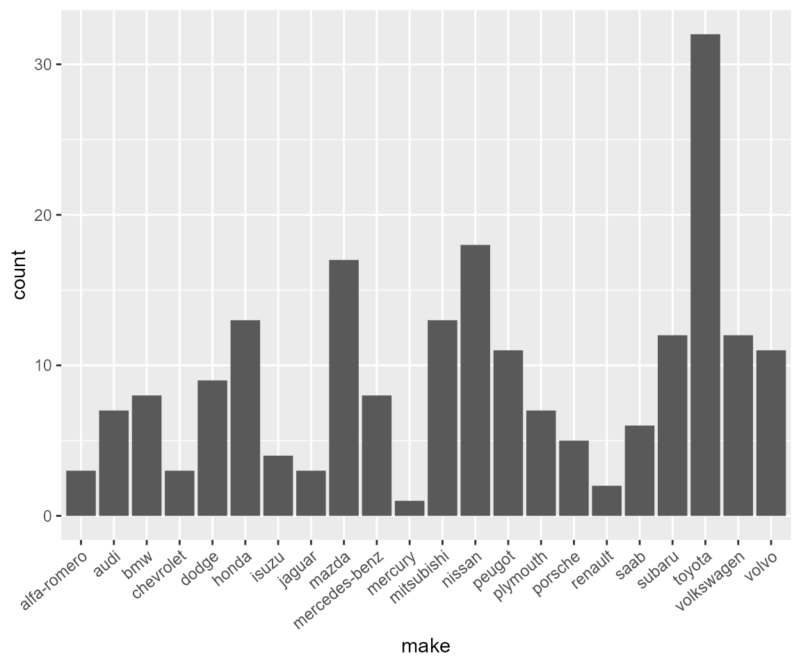
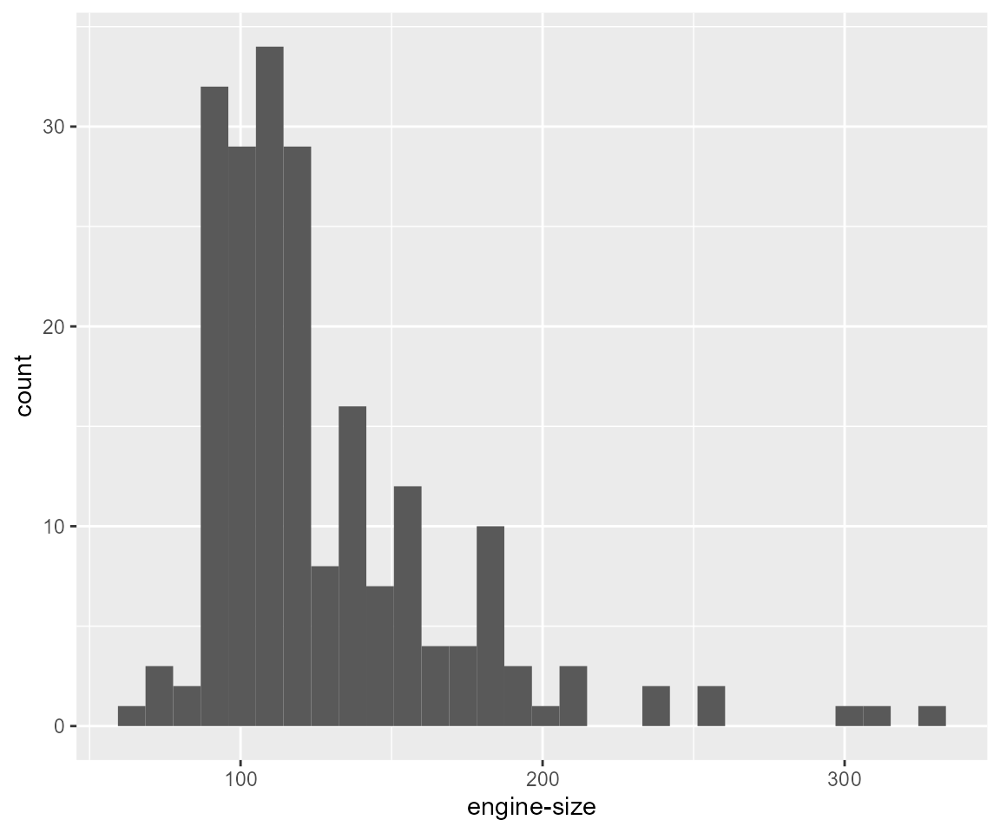
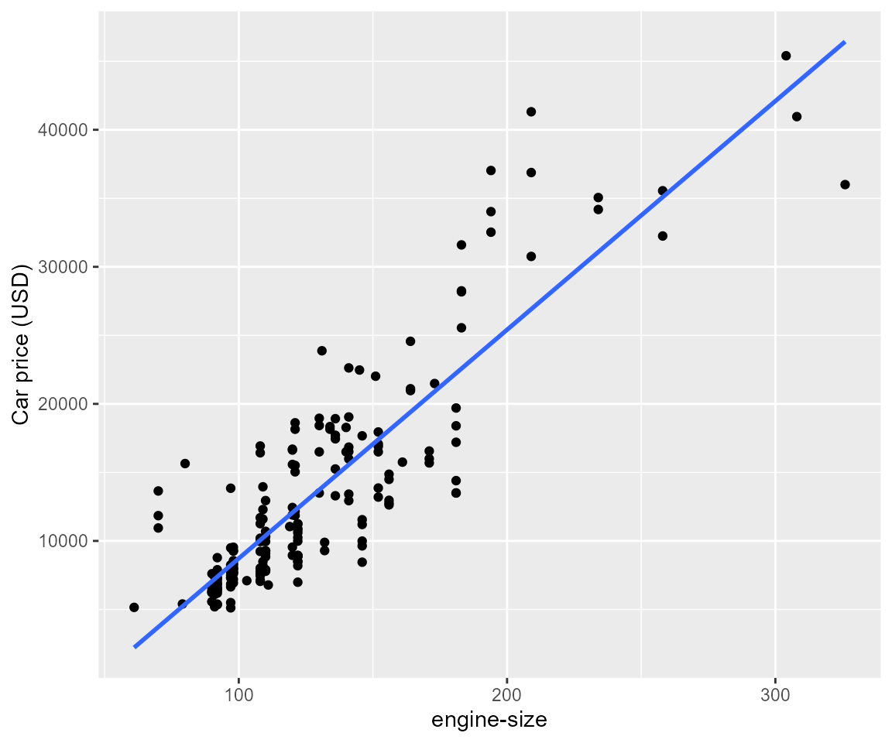

carpriceprediction-vignette
carpriceprediction-vignette.RmdThis vignette contains examples and documentation on how to use carpriceprediction package to perform exploratory data analysis (EDA) and model fitting for prediction purpose on the automobile dataset, which was created by Jeffrey C. Schlimmer in 1985. The data were collected from imports-85.
With this package, you will be able to
- save variables that help generating the report;
- obtain the first
nvariables that explain most variations of theprice. - visualize the distribution of these
nvariables across dataset. - perform Lasso regression and Ridge regression on the “automobile” dataset in order to develop a model for predicting car prices based on various car characteristics.
- compare performance of Lasso regression model, Ridge regression model, and OLS model in the prediction of car price.
library(carpriceprediction)Data
The automobile dataset contains 26 rows and 205
observations. The response variable is price and the others
are explanatory variables.
Load the data:
data("automobile")
head(automobile)
#> # A tibble: 6 × 26
#> symbol…¹ norma…² make fuel-…³ aspir…⁴ num-o…⁵ body-…⁶ drive…⁷ engin…⁸ wheel…⁹
#> <fct> <dbl> <fct> <fct> <fct> <fct> <fct> <fct> <fct> <dbl>
#> 1 3 NA alfa… gas std two conver… rwd front 88.6
#> 2 3 NA alfa… gas std two conver… rwd front 88.6
#> 3 1 NA alfa… gas std two hatchb… rwd front 94.5
#> 4 2 164 audi gas std four sedan fwd front 99.8
#> 5 2 164 audi gas std four sedan 4wd front 99.4
#> 6 2 NA audi gas std two sedan fwd front 99.8
#> # … with 16 more variables: length <dbl>, width <dbl>, height <dbl>,
#> # `curb-weight` <dbl>, `engine-type` <fct>, `num-of-cylinders` <fct>,
#> # `engine-size` <dbl>, `fuel-system` <fct>, bore <dbl>, stroke <dbl>,
#> # `compression-ratio` <dbl>, horsepower <dbl>, `peak-rpm` <dbl>,
#> # `city-mpg` <dbl>, `highway-mpg` <dbl>, price <dbl>, and abbreviated
#> # variable names ¹symboling, ²`normalized-losses`, ³`fuel-type`, ⁴aspiration,
#> # ⁵`num-of-doors`, ⁶`body-style`, ⁷`drive-wheels`, ⁸`engine-location`, …Functions
Save Variables
The function saveVar() allows you to save the column
price as a .rds file. The name
should end with .rds and cannot be empty, or it may cause
error.
Note that out_dir is the path from .Rproj.
If the out_dir does not exists, a new directory will be
created when the function is called.
saveVar(var = automobile$price, name = "price.rds", out_dir = "result")
# will print "price.rds saved to your/absolute/path/.../result"
# will return "price.rds saved to result"\(R^2\)
The function getR2() allows you to get \(R^2\) of the first n
explanatory variables that explain most variations by fitting OLS model.
The input variable n should be whole numbers from 1 to
25.
(getR2(dat = automobile,n = 2))
#> r_sqr names
#> 1 0.796 make
#> 2 0.761 engine-sizeDistribution of Variables
The function plotAll() visualize the distribution of
chosen variables in automobile. The function returns a list
of plots.
-
makeis a factor, hence presents the barplot. -
engine-sizeis continuous, hence presents the histogram and scatterplot with a linear regression line. One continuous variable takes two slots in the returned list.

# access histogram for "engine-size"
plots[[2]]
# access scatterplot for "engine-size"
plots[[3]]
Split Dataset
Then, we can call the following functions to get the models to predict the car price.
Firstly, since we are using cross-validation. We will split the whole data frame into training set and testing set:
# By specifying the set = "basic", the result contains all columns
training_df<-get_tr_tst(automobile,"basic")[[1]]
testing_df<-get_tr_tst(automobile,"basic")[[2]]
# By specifying the set = "at", the result contains all columns except ID
training_df_at<-get_tr_tst(automobile,"at")[[1]]
testing_df_at<-get_tr_tst(automobile,"at")[[2]]
# By specifying the set = "sub", the result contains columns except ID or categorical variables with more than 2 levels
training_df_sub<-get_tr_tst(automobile,"sub")[[1]]
testing_df_sub<-get_tr_tst(automobile,"sub")[[2]] Matrices
Now we can get the matrices using get_trm_tsm() for
lasso and ridge regression:
Note that 1 for x, the explanatory variables;
2 for y, the response. We highly recommend using
the data frame excluding ID and categorical variables with more than 2
levels to ensure interpretability.
# training matrices
training_matrices <- get_trm_tsm(training_df_sub,
testing_df_sub,
set = "training")
x_train_mat <- training_matrices[[1]]
y_train_mat <- training_matrices[[2]]
# testing matrices
testing_matrices <- get_trm_tsm(training_df_sub,
testing_df_sub,
set = "testing")
x_test_mat <- testing_matrices[[1]]
y_test_mat <- testing_matrices[[2]]Fit Models
Use get_model_plot() function to train models:
ask = "modeling", return models;ask = "plot", fig_path = "analysis/figs", save the result toanalysis/figsas PNG. If you don’t specify thefig_path, it will createanalysis/figsdirectory and save it automatically.
For lasso regression:
# Lasso regression
lasso_mods <-
get_model_plot(x_train_mat,
y_train_mat,
model = "lasso",
ask = "modeling")
# model with lambda resulting in minimum mse
lasso_mod <- lasso_mods[[1]]
# model with lambda resulting in (minimum mse + 1SE)
lasso_mod_1se <- lasso_mods[[2]]
# Training results with all lambdas
lasso_cv <- lasso_mods[[3]]
# visualize lasso_cv:
# get_model_plot(x_train_mat, y_train_mat, model = "lasso", ask = "plot")Similarly, for ridge regression:
ridge_mods <-
get_model_plot(x_train_mat,
y_train_mat,
model = "ridge",
ask = "modeling")
# model with lambda resulting in minimum mse
ridge_mod <- ridge_mods[[1]]
# model with lambda resulting in (minimum mse + 1SE)
ridge_mod_1se <- ridge_mods[[2]]
# Training results with all lambdas
ridge_cv <- ridge_mods[[3]]
# visualize ridge_cv:
# get_model_plot(x_train_mat, y_train_mat, model = "ridge", ask = "plot")Compare Results
We can use get_er_cv() to combine all results in a
table. Note that it will also contain the OLS Full Regression
for comparison.
Column
Modelis the model we trained using the training set;Column
R_MSEis the square root of mean prediction error using the testing set.
get_er_cv(training_df_at, training_df_sub, kfolds = 10, lasso_cv, ridge_cv)
#> # A tibble: 5 × 2
#> Model R_MSE
#> <chr> <dbl>
#> 1 LASSO Regression with minimum MSE 671.
#> 2 LASSO Regression with 1SE MSE 810.
#> 3 Ridge Regression with minimum MSE 658.
#> 4 LASSO Regression with 1SE MSE 846.
#> 5 OLS Full Regression 1052.